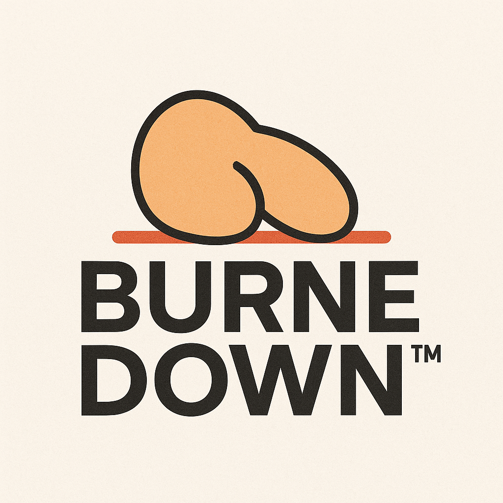

🔥 Boostez votre vélocité grâce à la Burne Down Chart™ !
Bonjour équipe de rockstars (fr)agiles,
Chez [Nom de l'entreprise], nous croyons fermement qu'un sprint sans métrique, c'est comme un daily sans silence gênant.
C'est pourquoi, dès ce lundi, nous déployons notre nouvel outil de pilotage de performance humaine : LA BURNE DOWN CHART™.
🧠C'est quoi cette merveille ?
Oubliez Jira. Oubliez les velocity charts. Avec la Burne Down Chart™, vous suivez en temps réel la courbe de motivation perçue de vos devs… exprimée en points de burne fictifs (PBF™).
Un indicateur de virilité projectuelle scientifiquement subjectif.
📉 Comment ça marche ?
- Chaque jour : logguez votre taux de burnitude sur une échelle de 1 à “plus de jus”.
- Le Scrum Master trace la courbe sacrée.
- Si elle descend bien : tout va bien.
- Si elle stagne : vous êtes en train de saboter le sprint.
🚨 Pourquoi c'est mieux qu'un burn-down classique ?
- Plus humain : ça quantifie l'ego blessé, pas juste les tickets.
- Plus fun : "Burne molle" remplace "Ticket en cours" dans les daily.
- Plus engageant : une descente bien linéaire vous donne l'illusion de maîtriser le chaos.
🧘‍♀️ Témoignages
“Depuis que j'utilise la Burne Down, je me sens enfin validé en tant qu'individu itératif.”
— Kevin, Développeur Front Emotional
“Je ne comprends toujours pas comment ça marche, mais j'adore faire semblant.”
— Chloé, PO auto-coachée
💼 Formation obligatoire
📅 Vendredi - 13h13 : Webinaire de lancement avec notre gourou Agile, Jean-Philippe Pivot.
📠Thème : “Aligner sa vélocité avec son chakra de productivitéâ€
🵠Bonus : tea ceremony + synchronisation de backlog via mandala mural.
🚀 Prochaines features à venir
- Burne Down Realtime Sync™ dans Teams.
- Extension SIRH : “Mood Tracker as a Service”.
- Plugin Figma pour designer vos échecs en UX positive.
🏁 Conclusion
Chez [Nom de l'entreprise], on ne se contente pas d'être agiles.
On est Burne Down Driven™.
Alors... prêt·e à faire descendre la courbe ?
L'Équipe Agile Enablement Office™
"Parce que votre motivation n'est jamais assez métriquée."